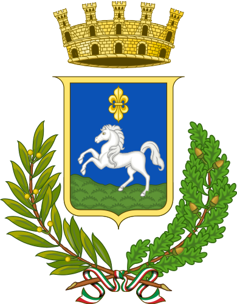

Città di Martina Franca
Progetti ·
Proposte
Raccolta di analisi, proposte di fattibilità e progetti per il territorio.
PL9 Sottopasso Rotatoria Europa
— proposta attiva al Comune.
📋
PL9 · Sottopasso Rotatoria Europa
Attivo
Proposta di fattibilità — Relazione tecnica, quadri economici, analisi CBA, visione territoriale, kit social, asset design
→
📝
Proposte e Idee
Raccolta di proposte per il miglioramento urbano e territoriale
→
🚲
Pista Ciclabile
Analisi e proposte per la mobilità ciclabile urbana
→
📊
Piano di Mandato
Monitoraggio e analisi del programma amministrativo
→
📈
Report e Analisi
Report periodici, analisi dati e approfondimenti statistici
→
🌐
WebApp e Strumenti
Applicazioni web, tool interattivi e utility civiche
→
📱
Social Kit
Contenuti per social media, template grafici e kit di comunicazione
→
🖼️
Immagini e Media
Archivio fotografico, render e materiale visivo
→
📚
Riferimenti e Fonti
Documentazione, normative, benchmark e casi studio
→
🎨
PL9 — Asset Design
Logo Barocco Cosmico, brand spec, Instagram post, carosello, report finanziario
→